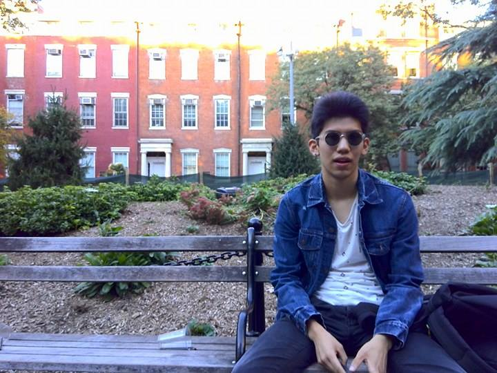

A traveller of cultures
(profiling excercise)
(2016. sept 29.)
It’s the early evening in Washington Square Park and the sparks of the dawning sun paint everything orange. The gigantic building of Bobst guards the square lit a red, fat angel. At the corner of West 4th Street and Schwartz Plaza, students hand out free iced coffee from a booth with stickers saying “Brews for Jesus.” Jesus Ian Kumamoto, 19, sees the booth and asks “Oh, are these for me?” Jesus is a sophomore at New York University, majoring in journalism and global liberal studies. When asked about whether there is any religious background behind his first name, he says that even though his father’s side of the family has an extensive catholic background, he himself is not by any means religious. He rather likes to be his own boss, and leave a mark on the Earth, while learning from it and exploring it at the same time. He has already lived in Mexico, the United States and in Spain, but he does not feel like he is tired of moving around. Both adventurous and deeply observant, he is ready to make the world his oyster.
A hopeful wanderer
“I was born in Mexico City and lived there until I was seven. I went to a local Mexican school and studied in Spanish. Then I moved to suburb of Dallas, because Mexico was getting more and more dangerous, especially for us, because we looked foreign. A lot of kidnappers targeted foreigners. I was in Texas for eight years, then when our visa expired, me and my family moved to Barcelona in Spain. I lived there for three years before coming to New York. I also spent a lot of summers in China, because my mother is from there. We still go back to Mexico every other year, but the more time I stay away from the country, the more I change, and now the country seems different to me. When I’m there, I feel a mixture of sadness, and that I’m glad to be there. Sadness, because I see how terrible the government still is, and how corruption and violence still damage the country. The saddest part is to see how a lot of Mexican people just accepted that. The things I still love are the food and how genuine and welcoming the people are.”
Why New York now?
“I went to an American high school in Barcelona, so I was pretty much conditioned to go to a college in the States. But I felt I didn’t want to go to a suburb or a college town, because I felt it would have been really hard for me to relate to people, so I knew that if came back to the States, I’d need to live in a big city. And I feel New York is the perfect big city for international people.”
Who needs fiction when life is already so interesting?
“Out of all my hobbies, I’m the most passionate about writing. I write mostly non-fiction, because I like to write down most of the things I see and feel, and I also love writing about problems that I’d like to solve. If I see something that’s unfair, I write it down and I hope that someday I’ll have the opportunity to go back and write more about it or try to solve it. I write non-fiction because I find reality way more interesting than anything I could come up in my head. Regardless of that I still consider Ernest Hemingway one of my favorite writers. I don’t necessarily like his style, but I romanticise his life. I know he was a messed up guy, but I think he was very ballsy and true to his writing and what he felt. He had certain ideals and risked his life for writing about them. This is really what I aspire to be as a writer, and even though I know that a lot of times a lot of people give up their ideals to achieve fame and money, if you are not true to yourself, your writing is not going to last.”
What’s to come?
“In the future I definitely want to do freelance writing. I want to write for the rest of my life, but I know that if you write for a magazine or such, you usually need to meet the publication halfway. You can’t write whatever you want and you need to be in line with the publication’s ideals. As a freelancer I’d just write about things that interest me, then hopefully find someone who’s interested in publishing it. I value independence a lot, I cannot imagine a life where I stay in one place. And freelancing would allow me to travel a lot, so it’s the perfect job from this aspect as well.”
 Go Back
Go Back